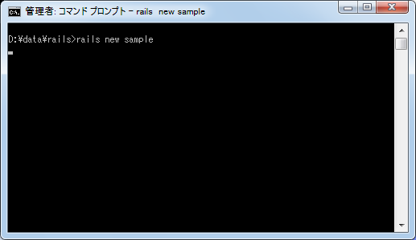
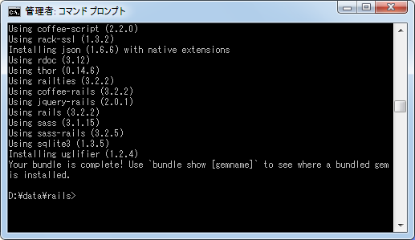
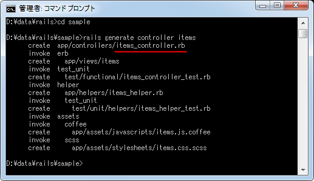
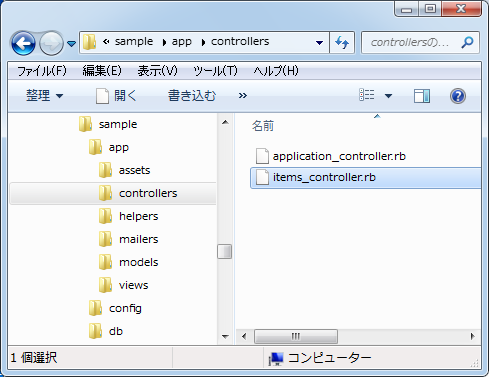
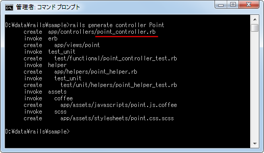
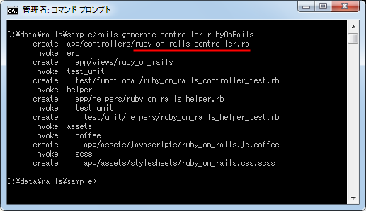
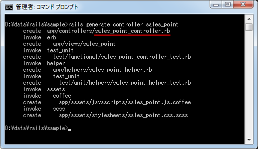

コントローラの作成と命名規則(命名規約)
Railsアプリケーションを作成する上でコントローラの作成方法について解説いたします。また合わせてコントローラの名前をどのように付けるべきかについて命名規則についても解説いたします。
1.コントローラの作成
2.コントローラの命名規則
3.複数の単語を使ったコントローラ名の付け方
コントローラの作成
まずコントローラの作成方法です。手動でコントローラ用のクラスを記述することも可能ですが、次のコマンドを実行することで必要なファイルを自動的に作成することができます。
rails generate controller コントローラ名
では実際に試してみます。まずはテスト用の「sample」アプリケーションを作成します。


続いてコントローラを作成します。今回は「items」というコントローラを作成します。先程作成したアプリケーションのルートディレクトリに移動し、次のようにコマンドを実行して下さい。
rails generate controller items

いくつか自動的にファイルが作成されていますが、その中の「app/controllers/items_controller.rb」がコントローラに関して記述されたファイルとなります。

作成されたファイルはテキストファイルとなっています。ではテキストエディタなどで先程作成された「items_controller.rb」ファイルを開いてみます。
class ItemsController < ApplicationController end
ApplicationControllerクラスを継承したクラスが定義されています。クラス名は「ItemsController」となっております。
手動で作成する場合も同じようにApplicationControllerクラスを継承したクラスを定義することで作成しますが、その場合クラス名やクラスが記述されたファイルのファイル名については規則があります。
コントローラの命名規則
Railsではコントローラやモデルなどの名前付けの方法が規約として決まっています。先程作成したコントローラでは次のような関係となっていました。
| 名称 | 例 |
|---|---|
| コントローラ名 | items |
| コントローラクラス名 | ItemsController |
| ファイル名 | items_controller.rb |
このようにコントローラ名を「xxx」とした場合、コントローラクラス名は「XxxController」のようにコントローラ名の先頭文字を大文字にしたものに「Controller」を付け加えたものとなり、そのクラスを記述したファイルの名前は「xxx_controller.rb」となります。
手動で作成する場合もクラス名を「YyyController」とした場合は、そのクラスが記述されたファイルの名前は「yyy_controller.rb」とする必要があります。
なおRailsでは1つのモデルを扱うために1つのコントローラを作成する場合が多いのですが、その場合コントローラ名はモデル名を複数形にしたものを付ける場合が多いです。例えばモデル名が「price」であれば、そのモデルを扱うコントローラ名は「prices」のように名前を付けます。Scaffoldを使った場合は自動的にそういった名前付けとなります。(参考「Scaffoldによって作成されるファイル」)。
モデルを扱うコントローラの場合はこの形式にしておいた方がいいですが、そうではないコントローラの場合は名前を常に複数形のように付ける必要はありません。
またrailsコマンドを使ってコントローラを作成する場合、コントロール名の先頭を大文字した場合を試してみます。
rails generate controller Point

コントローラ名として「Point」を指定してコントローラを作成しました。作成されたファイル名は「point_controller.rb」となっており、これはコントローラ名として「point」と指定して作成した場合と同じになります。またファイルを開いて中身を確認してみます。
class PointController < ApplicationController end
クラス名も「PointController」となっており、これもコントローラ名として「point」と指定して作成した場合と同じになります。このことからコントローラ名は「point」と指定しても「Point」と指定しても同じ結果になるようです。
複数の単語を使ったコントローラ名の付け方
またコントローラ名に複数の単語を組み合わせたものを指定する場合は、キャメルケースの形式かアンダースコアで単語を区切った形式で指定します。
キャメルケースの形式とは、複数の単語をつなげる場合に先頭の文字を大文字にして組み合わせたものです。
salesPoint rubyOnRails
アンダースコアで単語を区切った形式とは、複数の単語をつなげる場合に単語と単語の間をアンダースコアでつないだものです。
sales_point ruby_on_rails
ではまずキャメルケースの形式でコントローラ名を指定した場合を確認してみます。
rails generate controller rubyOnRails

コントローラ名として「rubyOnRails」を指定してコントローラを作成しました。作成されたファイル名は「ruby_on_rails_controller.rb」となっており、各単語をアンダースコアでつなげたファイル名となっています。またファイルを開いて中身を確認してみます。
class RubyOnRailsController < ApplicationController end
クラス名は「RubyOnRailsController」となっています。これはコントローラ名の先頭を大文字にしたものです。
続いてアンダースコアの形式でコントローラ名を指定した場合を確認してみます。
rails generate controller sales_point

コントローラ名として「sales_point」を指定してコントローラを作成しました。作成されたファイル名は「sales_point_controller.rb」となっており、「コントローラ名_controller.rb」というファイル名となっています。またファイルを開いて中身を確認してみます。
class SalesPointController < ApplicationController end
クラス名は「SalesPointController」となっています。これはコントローラ名の先頭を大文字にし、アンダースコアでつないでいた単語の先頭文字を大文字にしてつなげたものとなっています。
このようにどちらの形式でコントローラ名を指定した場合でも、コントローラクラス名は「XxxYyyController」となり、そのクラスを記述したファイルの名前は「xxx_yyy_controller.rb」となります。特にどちらの形式がいいというわけではないようですので、使いやすいほうで統一して使われれば宜しいのではないかと思います。
( Written by Tatsuo Ikura )

著者 / TATSUO IKURA
初心者～中級者の方を対象としたプログラミング方法や開発環境の構築の解説を行うサイトの運営を行っています。